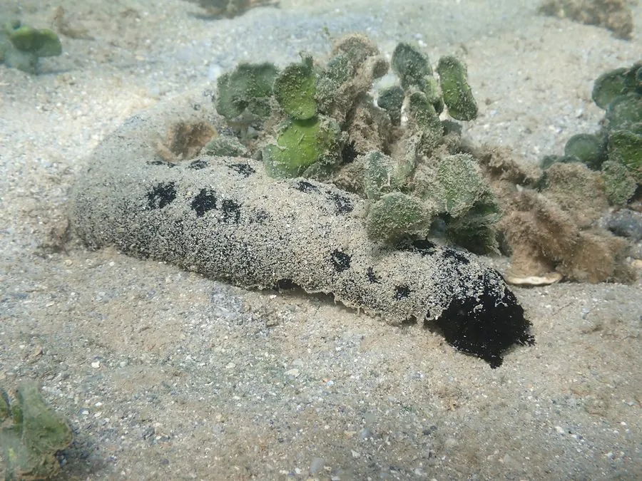

其他无脊椎动物 · 动物界
黑海参 Holothuria atra

体表乌黑发亮、形似粗壮黄瓜的热带海参，常把沙粒粘在身上伪装，受惊时分泌红色皂苷黏液，是珊瑚礁沙坪最常见的海参之一。
- 分类
- 门棘皮动物门纲海参纲目楯手目科海参科属海参属
- 栖息环境
- 热带珊瑚礁的沙坪、潟湖与海草床，多在浅水沙底活动
- 地理分布
- 印度洋—太平洋热带海域，中国南海、台湾和海南岛沿海
- 保护级别
- 暂无评估
物种志
黑海参体长一般20–45厘米，最大可达60厘米，身体呈粗壮的圆筒形，体壁厚实，背面散布细小的疣足，通体乌黑或黑褐色，表面常粘满白色珊瑚沙，看上去像一截裹着沙子的黑色黄瓜。口位于腹面，周围环生约二十只楯状触手，用来铲取沙粒。
黑海参是典型的沉积食性动物，它吞入含有机质的珊瑚沙，消化其中的藻类、细菌和碎屑，再把干净的沙子排出，因此被称作珊瑚礁的“清道夫”。它多在夜间活动，白天常埋在沙里或缩在礁石下。受到刺激时，体壁会分泌含海参皂苷的红色黏液，对鱼类有毒。它既能进行有性繁殖，也能通过横裂一分为二。黑海参广泛分布于印度洋—太平洋的珊瑚礁沙坪，中国南海和台湾沿海常见，肉质较薄，食用价值不高。
形态与习性
- 食性吞食含有机质的珊瑚沙，消化其中的藻类与细菌
- 体长一般20–45厘米，最大可达60厘米
- 体色通体乌黑，表面常粘附白色珊瑚沙
- 防御受刺激时分泌含海参皂苷的红色黏液，对鱼类有毒
- 繁殖有性繁殖与横裂无性繁殖并存
- 生态作用翻动沙层，被称作珊瑚礁的清道夫
趣味知识
- 黑海参会把沙粒粘在身上，看上去像一截裹着沙子的黑色黄瓜。
- 受惊时它分泌的红色黏液含海参皂苷，能让附近的小鱼中毒。
- 它吞沙取食，再把消化过的干净沙子排出来，帮助翻动礁区沙层。